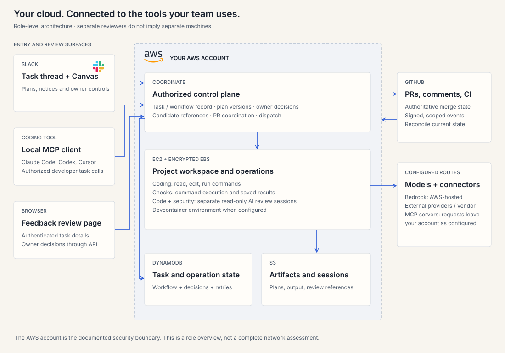

A task record connects the surfaces#
Slack, the coding-tool MCP client and the authenticated feedback page are entry and review surfaces. The Rovara Code task/workflow record connects plans, operations, decisions, candidate evidence and linked PRs.

Entry and authorization#
| Surface | Role |
|---|---|
| Slack | Project-bound task thread; plan Canvas; concise updates and owner controls. |
| Coding tool | Local agentx MCP client calls the authorized developer task API. |
| Feedback page | Authenticated task-scoped view and owner decisions through the API. |
| GitHub | Repository access, comments, CI and authoritative PR/merge state. |
Coding, checks and reviewers#
EC2 provides the coding workspace with encrypted EBS storage. The configured devcontainer supplies the project environment. Coding tools read/edit files and run shell commands.
Runtime check execution does not accept the coding agent’s success prose as test output. Code and security AI reviewers run in separate read-only sessions or operations. Separate review roles do not imply separate physical hosts.
State and evidence#
DynamoDB holds task, workflow and operation state. S3 holds artifacts and session data. EBS holds the workspace files. The control plane verifies candidate references and records decisions and review applicability.
GitHub events are signed, task-scoped and deduplicated; GitHub API state remains authoritative for PR reconciliation.
Account and external services#
Your AWS account is the documented security boundary. Environments in the same account are not separate security boundaries. Bedrock is AWS-hosted; configured external model providers and vendor MCP servers receive their respective requests outside the account.
Action policy can allow, ask or deny orchestrator tool calls. It does not gate every worker shell command or edit.
Retention and closeout#
Rovara Code preserves canonical task artifacts and decisions under configured retention. Canvas cleanup follows a verified preservation record. Original Slack replies and GitHub comments remain subject to their services’ retention.
Closeout details →